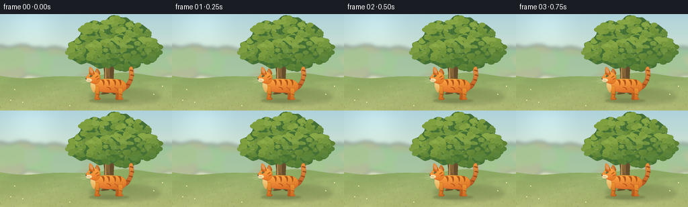
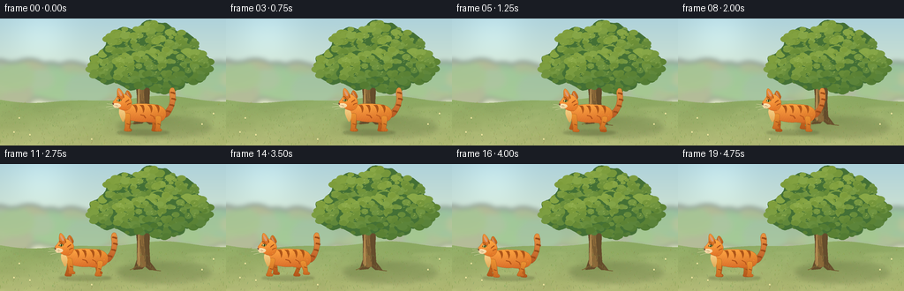

CODING AGENTS AS PIXEL WORLD MODELS
traex/GPT-6.1-Sol · instance_preservation_0054
点击播放 · 原生 RGB 像素
逐轮保存的候选
回放视频、检查图与代码变化。
每份候选均可单独播放。实际图片检查记录在下方工具轨迹中。
候选 01播放与检查图
点击播放 · 原生 RGB 像素


展开代码变化
--- 上一保存版本
+++ 本次保存版本
@@ -0,0 +1,211 @@
+from pathlib import Path
+import math
+import numpy as np
+from PIL import Image, ImageDraw, ImageFilter
+import artifact_io
+
+ROOT = Path(__file__).resolve().parent
+W,H,S=256,144,4
+rng=np.random.default_rng(71)
+
+def pt(p): return tuple(int(round(v*S)) for v in p)
+def box(b): return tuple(int(round(v*S)) for v in b)
+def ellipse(im,b,fill): ImageDraw.Draw(im).ellipse(box(b),fill=fill)
+def line(im,points,fill,width=1): ImageDraw.Draw(im).line([pt(p) for p in points],fill=fill,width=max(1,int(width*S)),joint='curve')
+def poly(im,points,fill): ImageDraw.Draw(im).polygon([pt(p) for p in points],fill=fill)
+def curve(points,n=22):
+ out=[points[0]]
+ for i in range(1,len(points),3):
+ if len(points[i:i+3]) < 3:
+ out.extend(points[i:]); break
+ p0=np.array(out[-1]); p1,p2,p3=map(np.array,points[i:i+3])
+ for t in np.linspace(0,1,n)[1:]: out.append(tuple((1-t)**3*p0+3*(1-t)**2*t*p1+3*(1-t)*t*t*p2+t**3*p3))
+ return out
+
+def path(im,points,fill,outline=None,width=.5):
+ p=curve(points)
+ poly(im,p,fill)
+ if outline: line(im,p+[p[0]],outline,width)
+
+def graded(im,points,top,bottom,light=None,edge=None):
+ # Local shaped paint with rounded, directional illumination.
+ p=curve(points); xs,ys=zip(*p)
+ x0=max(0,int(min(xs)*S)-2); x1=min(W*S,int(max(xs)*S)+3)
+ y0=max(0,int(min(ys)*S)-2); y1=min(H*S,int(max(ys)*S)+3)
+ if x1<=x0 or y1<=y0:return
+ mask=Image.new('L',(x1-x0,y1-y0)); d=ImageDraw.Draw(mask)
+ d.polygon([(int(x*S)-x0,int(y*S)-y0) for x,y in p],fill=255)
+ yy,xx=np.mgrid[y0:y1,x0:x1]
+ t=np.clip((yy-y0)/(y1-y0),0,1)[...,None]
+ c=np.array(top)*(1-t)+np.array(bottom)*t
+ c=np.broadcast_to(c,(y1-y0,x1-x0,3)).copy()
+ if light:
+ lx,ly,strength=light
+ rad=max(x1-x0,y1-y0)*.65
+ glow=np.exp(-((xx-lx*S)**2+(yy-ly*S)**2)/rad**2)*strength
+ c+=glow[...,None]
+ c+=1.2*np.sin(xx*.58+yy*.33)[...,None]
+ im.paste(Image.fromarray(np.uint8(np.clip(c,0,255))),(x0,y0),mask)
+ if edge: line(im,p+[p[0]],edge,.35)
+
+# A static sunlit garden, hand-painted from mathematical shapes.
+yy,xx=np.mgrid[:H*S,:W*S]
+y=yy/S;x=xx/S
+sky=np.empty((H*S,W*S,3),float)
+for k,(a,b) in enumerate(zip((174,210,219),(234,239,200))):sky[:,:,k]=a+(b-a)*np.clip(y/106,0,1)
+sky+=np.exp(-((x-47)**2+(y-20)**2)/1300)[...,None]*18
+bg=Image.fromarray(np.uint8(np.clip(sky,0,255)))
+# Distant wooded edge, kept low-contrast for depth.
+far=Image.new('RGBA',bg.size)
+for _ in range(100):
+ cx=rng.uniform(-20,280); cy=rng.uniform(61,87); r=rng.uniform(8,25)
+ ellipse(far,(cx-r,cy-r*.75,cx+r,cy+r*.8),(int(rng.uniform(115,158)),int(rng.uniform(151,182)),int(rng.uniform(104,131)),150))
+far=far.filter(ImageFilter.GaussianBlur(3*S));bg=Image.alpha_composite(bg.convert('RGBA'),far).convert('RGB')
+# Warm grassy plane.
+pts=[(0,91),(68,86),(123,97),(256,86),(256,144),(0,144),(0,144),(0,144),(0,91),(0,91)]
+# direct ground gradient clipped to curving horizon
+mask=Image.new('L',bg.size);md=ImageDraw.Draw(mask)
+horizon=[(i,92+3*math.sin(i/38)+1.5*math.sin(i/17)) for i in range(257)]
+md.polygon([pt(p) for p in horizon+[(256,144),(0,144)]],fill=255)
+ground=np.empty_like(sky)
+for k,(a,b) in enumerate(zip((143,172,101),(179,187,118))):ground[:,:,k]=a+(b-a)*np.clip((y-92)/52,0,1)
+noise=rng.normal(0,1.5,(H*S,W*S))
+ground+=noise[...,None]+(4*np.sin(x/24+y/11))[...,None]
+bg.paste(Image.fromarray(np.uint8(np.clip(ground,0,255))),(0,0),mask)
+# patches of softly shifting meadow color (stationary scene)
+patch=Image.new('RGBA',bg.size)
+for _ in range(90):
+ cx=rng.uniform(0,256);cy=rng.uniform(98,150);rx=rng.uniform(3,20)
+ ellipse(patch,(cx-rx,cy-1,cx+rx,cy+2),(217,217,155,24))
+bg=Image.alpha_composite(bg.convert('RGBA'),patch.filter(ImageFilter.GaussianBlur(2*S))).convert('RGB')
+# Tree canopy and trunk cast one broad shadow to the lower right.
+shadow=Image.new('RGBA',bg.size)
+ellipse(shadow,(133,112,239,134),(61,78,35,58))
+ellipse(shadow,(149,114,185,126),(52,69,28,56))
+bg=Image.alpha_composite(bg.convert('RGBA'),shadow.filter(ImageFilter.GaussianBlur(3*S))).convert('RGB')
+# Branching oak with flared roots.
+trunk=[(151,120),(155,108),(155,88),(153,68),(147,54),(139,46),(141,42),(153,50),(158,60),(162,66),(168,53),(181,44),(182,47),(172,57),(170,73),(169,94),(170,111),(177,120),(169,120),(164,116),(161,119),(151,120)]
+# pad into cubic segments by using explicit branch polygon / layered light
+poly(bg,trunk,(101,77,44))
+path(bg,[(156,115),(160,103),(157,85),(158,67),(160,65),(162,65),(164,69),(161,85),(165,99),(165,116),(162,117),(160,118),(156,115)],(139,105,57))
+path(bg,[(155,112),(156,98),(156,82),(157,72),(158,87),(158,105),(159,114),(158,115),(156,116),(155,112)],(177,137,78))
+for i in range(13):
+ bx=rng.uniform(155.4,167); by=rng.uniform(73,109)
+ line(bg,[(bx,by),(bx+rng.uniform(-1,1),by+5),(bx+.4,by+10)],(91,69,39),rng.uniform(.2,.65))
+line(bg,[(155,116),(150,119),(147,120)],(122,95,49),1.1)
+line(bg,[(166,114),(174,120),(182,121)],(112,87,47),1.2)
+# Crown constructed from volumetric groups of leaves.
+clusters=[(125,54,25),(145,32,27),(174,25,28),(198,34,26),(216,54,23),(185,58,32),(153,59,27)]
+for cx,cy,r in clusters:
+ outline=[(cx+r*math.cos(a)*(1+.065*math.sin(a*9)),cy+r*.80*math.sin(a)*(1+.07*math.cos(a*7))) for a in np.linspace(0,2*math.pi,130)]
+ poly(bg,outline,(68,112,53))
+ for _ in range(90):
+ a=rng.uniform(0,2*math.pi); rr=r*math.sqrt(rng.uniform(0,.96));lx=cx+math.cos(a)*rr;ly=cy+math.sin(a)*rr*.79
+ lr=rng.uniform(2.0,5.9)
+ illumination=np.clip(.7-(ly-cy)/r*.43-(lx-cx)/r*.25,0,1)
+ base=np.array((59,105,47))+(np.array((132,163,66))-np.array((59,105,47)))*illumination
+ base+=rng.uniform(-7,7)
+ ellipse(bg,(lx-lr,ly-lr*.65,lx+lr,ly+lr*.7),tuple(np.uint8(np.clip(base,0,255))))
+# Scattered tiny leaf glints, upper left lit by morning light.
+for _ in range(330):
+ cx,cy,r=clusters[rng.integers(len(clusters))]
+ a=rng.uniform(0,2*math.pi);rr=r*math.sqrt(rng.uniform(0,.9));lx=cx+math.cos(a)*rr;ly=cy+math.sin(a)*rr*.78
+ if rng.random()<.6 and ly<cy+5:
+ line(bg,[(lx-.7,ly+.4),(lx+.7,ly-.4)],(156,180,90),.65)
+# Individual grass blades and a few inconspicuous flowers.
+for _ in range(620):
+ gx=rng.uniform(0,256);gy=rng.uniform(96,144); height=rng.uniform(.7,2.8)*(gy/144)
+ col=tuple(map(int,(rng.uniform(104,159),rng.uniform(134,172),rng.uniform(63,100))))
+ line(bg,[(gx,gy),(gx+rng.uniform(-1,1),gy-height)],col,.27)
+for gx,gy in [(22,115),(34,134),(104,139),(229,122),(242,110),(16,131)]:
+ line(bg,[(gx,gy),(gx-.5,gy-2)],(94,132,65),.4)
+ ellipse(bg,(gx-1,gy-3.2,gx+.6,gy-1.5),(239,229,159))
+
+# Consistent orange tabby. Coordinates are in the cat's local side-view frame.
+def draw_cat(im,cx,phase,walk,frame):
+ bob=-.7*math.sin(phase*2)*walk
+ cy=126+bob
+ def transform(ps):return [(cx+a,cy+b) for a,b in ps]
+ def P(ps,fill,edge=None):path(im,transform(ps),fill,edge)
+ def L(ps,fill,width):line(im,transform(ps),fill,width)
+ def E(b,fill):ellipse(im,(cx+b[0],cy+b[1],cx+b[2],cy+b[3]),fill)
+ def G(ps,t,b,light=None,edge=None):
+ graded(im,transform(ps),t,b,(cx+light[0],cy+light[1],light[2]) if light else None,edge)
+ # Ground contact shadow moves with the animal.
+ sh=Image.new('RGBA',im.size)
+ ellipse(sh,(cx-30,126.5,cx+30,132),(63,67,31,66))
+ ellipse(sh,(cx-24,127,cx+22,130),(52,60,31,45))
+ im.paste(Image.alpha_composite(im.convert('RGBA'),sh.filter(ImageFilter.GaussianBlur(1.15*S))).convert('RGB'))
+ # Upright gently curling tail, attached at the same rump throughout.
+ sw=.9*math.sin(frame*.31)
+ tail=[(19,-19),(28,-21),(32+sw,-31),(30+sw,-40),(29+sw,-46),(32+sw,-49),(35+sw,-47),(39+sw,-39),(36+sw,-25),(30,-17),(26,-12),(21,-13),(19,-19)]
+ G(tail,(216,131,47),(173,78,26),(29,-38,20),edge=(146,79,29))
+ for ty,tx in [(-42,33),(-35,34),(-28,32),(-21,28)]:
+ L([(tx-2+sw,ty-.5),(tx+1+sw,ty),(tx+3+sw,ty+1)],(155,75,24),2)
+ # Far limbs are darker and offset in the gait.
+ def leg(hip,ph,far=False):
+ swing=4.1*math.cos(ph)*walk
+ lift=max(0,math.sin(ph))*3.1*walk
+ foot=hip+swing
+ knee=hip+.55*swing+1.2
+ top=-15 if hip>0 else -18
+ ps=[(hip-3,top),(hip-3,top+6),(knee-3,-6-lift),(foot-3,-1-lift),(foot-4,1-lift),(foot-4,2-lift),(foot+2,2-lift),(foot+5,2-lift),(foot+5,-.7-lift),(foot+2,-1.6-lift),(knee+2,-9),(hip+4,top+3),(hip+3,top),(hip+1,top-1),(hip-1,top-1),(hip-3,top)]
+ G(ps,(207,116,36) if far else (239,150,51),(177,84,26) if far else (199,103,34),edge=(156,85,28))
+ L([(knee-2,-7-lift),(knee+1,-6-lift)],(158,77,24),1.1)
+ L([(foot+.6,.8-lift),(foot+.6,1.7-lift)],(153,87,40),.45)
+ L([(foot+2.4,.8-lift),(foot+2.4,1.7-lift)],(153,87,40),.45)
+ leg(13,phase+math.pi,True);leg(-17,phase,True)
+ # Rounded elongated torso.
+ G([(-23,-23),(-17,-30),(-4,-30),(8,-29),(21,-29),(26,-24),(26,-18),(26,-8),(14,-7),(4,-9),(-3,-8),(-13,-10),(-18,-12),(-25,-13),(-27,-18),(-23,-23)],(238,150,49),(202,94,27),(-9,-26,18),edge=(161,88,30))
+ # Back and rib tabby markings curve over the same coat.
+ for offset in [-9,-1,8,16]:
+ P([(offset-3,-28),(offset-1,-27),(offset+1,-23),(offset+1,-19),(offset+3,-22),(offset+3,-26),(offset+1,-28),(offset,-28),(offset-2,-28),(offset-3,-28)],(173,84,24))
+ L([(-3,-17),(1,-16),(3,-13)],(174,80,25),1.3)
+ L([(8,-17),(12,-15),(13,-12)],(179,84,26),1.2)
+ # Near legs overlap the lower edge of the body.
+ leg(17,phase,False);leg(-18,phase+math.pi,False)
+ # Creamy chest in a small bib, not a second cat.
+ G([(-26,-24),(-29,-21),(-26,-14),(-23,-9),(-21,-9),(-20,-13),(-20,-18),(-21,-22),(-23,-24),(-26,-24)],(248,211,139),(224,168,84))
+ # Far ear.
+ G([(-21,-35),(-20,-46),(-17,-48),(-13,-38),(-13,-34),(-17,-32),(-21,-35)],(218,122,37),(172,81,25),edge=(155,81,31))
+ P([(-19,-43),(-18,-43),(-15,-37),(-15,-36),(-17,-35),(-18,-37),(-19,-43)],(204,143,103))
+ # Head with visible cheek and projecting nose, facing screen-left.
+ G([(-30,-37),(-28,-42),(-20,-42),(-16,-37),(-11,-34),(-12,-25),(-18,-22),(-23,-21),(-29,-24),(-31,-28),(-34,-29),(-35,-32),(-33,-33),(-30,-37)],(244,159,57),(219,109,33),(-28,-37,16),edge=(157,81,28))
+ # Near pointed triangular ear and pink interior.
+ G([(-29,-36),(-30,-45),(-29,-49),(-26,-46),(-21,-41),(-22,-37),(-24,-34),(-26,-34),(-28,-35),(-29,-36)],(243,154,62),(211,105,32),edge=(163,84,29))
+ P([(-28,-44),(-28,-46),(-24,-41),(-24,-39),(-25,-37),(-27,-39),(-28,-44)],(218,156,119))
+ # Forehead/cheek stripes.
+ L([(-29,-38),(-27,-37),(-26,-35)],(166,82,25),1.2)
+ L([(-23,-40),(-22,-38),(-22,-36)],(165,80,26),1.15)
+ L([(-16,-34),(-19,-32),(-20,-31)],(167,78,25),1.25)
+ L([(-14,-30),(-17,-29),(-18,-28)],(166,77,24),1.2)
+ # White muzzle and chin, shaded softly.
+ G([(-31,-30),(-34,-30),(-35,-27),(-32,-25),(-29,-24),(-26,-25),(-25,-27),(-25,-29),(-28,-30),(-31,-30)],(252,230,181),(242,206,149))
+ # Green almond eye with dark slit and catchlight.
+ P([(-30,-33),(-28.8,-35.3),(-25.7,-35.2),(-24.5,-33.5),(-25.8,-31.8),(-28.3,-31.8),(-30,-33)],(104,72,31))
+ E((-29.1,-34.5,-25.4,-32.0),(151,179,79))
+ E((-27.8,-34.8,-26.6,-31.9),(39,48,25))
+ E((-28.4,-34.2,-27.6,-33.4),(255,250,218))
+ # Nose, lip and whisker roots.
+ P([(-34.9,-30),(-33.9,-30.5),(-32.4,-29.7),(-33.6,-28.3),(-34.2,-28.5),(-34.6,-29),(-34.9,-30)],(125,72,60))
+ L([(-33.6,-28.5),(-32.4,-27.7),(-29.4,-27.8)],(131,86,50),.45)
+ for a,b in [(-30,-27.6),(-28.7,-27),(-30.1,-26.1)]:E((a-.18,b-.18,a+.18,b+.18),(142,96,51))
+ for ps in [[(-30,-27),(-37,-29),(-41,-29.4)],[(-30,-26.4),(-38,-26.6),(-42,-25.8)],[(-29,-25.5),(-35,-24.2),(-39,-23)]]:
+ L(ps,(247,235,197),.35)
+ # Few warm fine coat strokes keep the cat richly lit but consistent.
+ for a,b in [(-18,-24),(-12,-25),(1,-25),(14,-23),(21,-17),(-23,-32)]:
+ L([(a,b),(a+1.3,b+.4)],(246,177,85),.35)
+
+frames=[]
+for i in range(20):
+ u=np.clip((i-3)/13,0,1)
+ # Smooth acceleration and braking, with a clear start and end hold.
+ travel=u*u*(3-2*u)
+ cx=162-98*travel
+ moving=1 if 3<i<17 else 0
+ phase=(162-cx)*2*math.pi/18
+ im=bg.copy()
+ draw_cat(im,cx,phase,moving,i)
+ frames.append(np.array(im.resize((W,H),Image.Resampling.LANCZOS),dtype=np.uint8))
+artifact_io.save(np.stack(frames), ROOT)
+print('Saved 20 RGB frames at 256Ã144, 4 fps.')
可观测工具轨迹
实际执行的命令与返回图片。
命令 1exit 0
/bin/bash -lc 'ls -la && cat prompt.txt && cat GENERATION_RULES.md && cat task_spec.json'
命令 2exit 0
/bin/bash -lc "cat artifact_io.py && python - <<'PY' import importlib.util for x in ['PIL','numpy','aggdraw','cv2']: print(x, bool(importlib.util.find_spec(x))) PY"
命令 3exit 1
/bin/bash -lc "cat > generate.py <<'PY'
from pathlib import Path
import math
import numpy as np
from PIL import Image, ImageDraw, ImageFilter
import artifact_io
ROOT = Path(__file__).resolve().parent
W,H,S=256,144,4
rng=np.random.default_rng(71)
def pt(p): return tuple(int(round(v*S)) for v in p)
def box(b): return tuple(int(round(v*S)) for v in b)
def ellipse(im,b,fill): ImageDraw.Draw(im).ellipse(box(b),fill=fill)
def line(im,points,fill,width=1): ImageDraw.Draw(im).line([pt(p) for p in points],fill=fill,width=max(1,int(width*S)),joint='curve')
def poly(im,points,fill): ImageDraw.Draw(im).polygon([pt(p) for p in points],fill=fill)
def curve(points,n=22):
out=[points[0]]
for i in range(1,len(points),3):
p0=np.array(out[-1]); p1,p2,p3=map(np.array,points[i:i+3])
for t in np.linspace(0,1,n)[1:]: out.append(tuple((1-t)**3*p0+3*(1-t)**2*t*p1+3*(1-t)*t*t*p2+t**3*p3))
return out
def path(im,points,fill,outline=None,width=.5):
p=curve(points)
poly(im,p,fill)
if outline: line(im,p+[p[0]],outline,width)
def graded(im,points,top,bottom,light=None,edge=None):
# Local shaped paint with rounded, directional illumination.
p=curve(points); xs,ys=zip(*p)
x0=max(0,int(min(xs)*S)-2); x1=min(W*S,int(max(xs)*S)+3)
y0=max(0,int(min(ys)*S)-2); y1=min(H*S,int(max(ys)*S)+3)
if x1<=x0 or y1<=y0:return
mask=Image.new('L',(x1-x0,y1-y0)); d=ImageDraw.Draw(mask)
d.polygon([(int(x*S)-x0,int(y*S)-y0) for x,y in p],fill=255)
yy,xx=np.mgrid[y0:y1,x0:x1]
t=np.clip((yy-y0)/(y1-y0),0,1)[...,None]
c=np.array(top)*(1-t)+np.array(bottom)*t
c=np.broadcast_to(c,(y1-y0,x1-x0,3)).copy()
if light:
lx,ly,strength=light
rad=max(x1-x0,y1-y0)*.65
glow=np.exp(-((xx-lx*S)**2+(yy-ly*S)**2)/rad**2)*strength
c+=glow[...,None]
c+=1.2*np.sin(xx*.58+yy*.33)[...,None]
im.paste(Image.fromarray(np.uint8(np.clip(c,0,255))),(x0,y0),mask)
if edge: line(im,p+[p[0]],edge,.35)
# A static sunlit garden, hand-painted from mathematical shapes.
yy,xx=np.mgrid[:H*S,:W*S]
y=yy/S;x=xx/S
sky=np.empty((H*S,W*S,3),float)
for k,(a,b) in enumerate(zip((174,210,219),(234,239,200))):sky[:,:,k]=a+(b-a)*np.clip(y/106,0,1)
sky+=np.exp(-((x-47)**2+(y-20)**2)/1300)[...,None]*18
bg=Image.fromarray(np.uint8(np.clip(sky,0,255)))
# Distant wooded edge, kept low-contrast for depth.
far=Image.new('RGBA',bg.size)
for _ in range(100):
cx=rng.uniform(-20,280); cy=rng.uniform(61,87); r=rng.uniform(8,25)
ellipse(far,(cx-r,cy-r*.75,cx+r,cy+r*.8),(int(rng.uniform(115,158)),int(rng.uniform(151,182)),int(rng.uniform(104,131)),150))
far=far.filter(ImageFilter.GaussianBlur(3*S));bg=Image.alpha_composite(bg.convert('RGBA'),far).convert('RGB')
# Warm grassy plane.
pts=[(0,91),(68,86),(123,97),(256,86),(256,144),(0,144),(0,144),(0,144),(0,91),(0,91)]
# direct ground gradient clipped to curving horizon
mask=Image.new('L',bg.size);md=ImageDraw.Draw(mask)
horizon=[(i,92+3*math.sin(i/38)+1.5*math.sin(i/17)) for i in range(257)]
md.polygon([pt(p) for p in horizon+[(256,144),(0,144)]],fill=255)
ground=np.empty_like(sky)
for k,(a,b) in enumerate(zip((143,172,101),(179,187,118))):ground[:,:,k]=a+(b-a)*np.clip((y-92)/52,0,1)
noise=rng.normal(0,1.5,(H*S,W*S))
ground+=noise[...,None]+(4*np.sin(x/24+y/11))[...,None]
bg.paste(Image.fromarray(np.uint8(np.clip(ground,0,255))),(0,0),mask)
# patches of softly shifting meadow color (stationary scene)
patch=Image.new('RGBA',bg.size)
for _ in range(90):
cx=rng.uniform(0,256);cy=rng.uniform(98,150);rx=rng.uniform(3,20)
ellipse(patch,(cx-rx,cy-1,cx+rx,cy+2),(217,217,155,24))
bg=Image.alpha_composite(bg.convert('RGBA'),patch.filter(ImageFilter.GaussianBlur(2*S))).convert('RGB')
# Tree canopy and trunk cast one broad shadow to the lower right.
shadow=Image.new('RGBA',bg.size)
ellipse(shadow,(133,112,239,134),(61,78,35,58))
ellipse(shadow,(149,114,185,126),(52,69,28,56))
bg=Image.alpha_composite(bg.convert('RGBA'),shadow.filter(ImageFilter.GaussianBlur(3*S))).convert('RGB')
# Branching oak with flared roots.
trunk=[(151,120),(155,108),(155,88),(153,68),(147,54),(139,46),(141,42),(153,50),(158,60),(162,66),(168,53),(181,44),(182,47),(172,57),(170,73),(169,94),(170,111),(177,120),(169,120),(164,116),(161,119),(151,120)]
# pad into cubic segments by using explicit branch polygon / layered light
poly(bg,trunk,(101,77,44))
path(bg,[(156,115),(160,103),(157,85),(158,67),(160,65),(162,65),(164,69),(161,85),(165,99),(165,116),(162,117),(160,118),(156,115)],(139,105,57))
path(bg,[(155,112),(156,98),(156,82),(157,72),(158,87),(158,105),(159,114),(158,115),(156,116),(155,112)],(177,137,78))
for i in range(13):
bx=rng.uniform(155.4,167); by=rng.uniform(73,109)
line(bg,[(bx,by),(bx+rng.uniform(-1,1),by+5),(bx+.4,by+10)],(91,69,39),rng.uniform(.2,.65))
line(bg,[(155,116),(150,119),(147,120)],(122,95,49),1.1)
line(bg,[(166,114),(174,120),(182,121)],(112,87,47),1.2)
# Crown constructed from volumetric groups of leaves.
clusters=[(125,54,25),(145,32,27),(174,25,28),(198,34,26),(216,54,23),(185,58,32),(153,59,27)]
for cx,cy,r in clusters:
outline=[(cx+r*math.cos(a)*(1+.065*math.sin(a*9)),cy+r*.80*math.sin(a)*(1+.07*math.cos(a*7))) for a in np.linspace(0,2*math.pi,130)]
poly(bg,outline,(68,112,53))
for _ in range(90):
a=rng.uniform(0,2*math.pi); rr=r*math.sqrt(rng.uniform(0,.96));lx=cx+math.cos(a)*rr;ly=cy+math.sin(a)*rr*.79
lr=rng.uniform(2.0,5.9)
illumination=np.clip(.7-(ly-cy)/r*.43-(lx-cx)/r*.25,0,1)
base=np.array((59,105,47))+(np.array((132,163,66))-np.array((59,105,47)))*illumination
base+=rng.uniform(-7,7)
ellipse(bg,(lx-lr,ly-lr*.65,lx+lr,ly+lr*.7),tuple(np.uint8(np.clip(base,0,255))))
# Scattered tiny leaf glints, upper left lit by morning light.
for _ in range(330):
cx,cy,r=clusters[rng.integers(len(clusters))]
a=rng.uniform(0,2*math.pi);rr=r*math.sqrt(rng.uniform(0,.9));lx=cx+math.cos(a)*rr;ly=cy+math.sin(a)*rr*.78
if rng.random()<.6 and ly<cy+5:
line(bg,[(lx-.7,ly+.4),(lx+.7,ly-.4)],(156,180,90),.65)
# Individual grass blades and a few inconspicuous flowers.
for _ in range(620):
gx=rng.uniform(0,256);gy=rng.uniform(96,144); height=rng.uniform(.7,2.8)*(gy/144)
col=tuple(map(int,(rng.uniform(104,159),rng.uniform(134,172),rng.uniform(63,100))))
line(bg,[(gx,gy),(gx+rng.uniform(-1,1),gy-height)],col,.27)
for gx,gy in [(22,115),(34,134),(104,139),(229,122),(242,110),(16,131)]:
line(bg,[(gx,gy),(gx-.5,gy-2)],(94,132,65),.4)
ellipse(bg,(gx-1,gy-3.2,gx+.6,gy-1.5),(239,229,159))
# Consistent orange tabby. Coordinates are in the cat's local side-view frame.
def draw_cat(im,cx,phase,walk,frame):
bob=-.7*math.sin(phase*2)*walk
cy=126+bob
def transform(ps):return [(cx+a,cy+b) for a,b in ps]
def P(ps,fill,edge=None):path(im,transform(ps),fill,edge)
def L(ps,fill,width):line(im,transform(ps),fill,width)
def E(b,fill):ellipse(im,(cx+b[0],cy+b[1],cx+b[2],cy+b[3]),fill)
def G(ps,t,b,light=None,edge=None):
graded(im,transform(ps),t,b,(cx+light[0],cy+light[1],light[2]) if light else None,edge)
# Ground contact shadow moves with the animal.
sh=Image.new('RGBA',im.size)
ellipse(sh,(cx-30,126.5,cx+30,132),(63,67,31,66))
ellipse(sh,(cx-24,127,cx+22,130),(52,60,31,45))
im.paste(Image.alpha_composite(im.convert('RGBA'),sh.filter(ImageFilter.GaussianBlur(1.15*S))).convert('RGB'))
# Upright gently curling tail, attached at the same rump throughout.
sw=.9*math.sin(frame*.31)
tail=[(19,-19),(28,-21),(32+sw,-31),(30+sw,-40),(29+sw,-46),(32+sw,-49),(35+sw,-47),(39+sw,-39),(36+sw,-25),(30,-17),(26,-12),(21,-13),(19,-19)]
G(tail,(216,131,47),(173,78,26),(29,-38,20),edge=(146,79,29))
for ty,tx in [(-42,33),(-35,34),(-28,32),(-21,28)]:
L([(tx-2+sw,ty-.5),(tx+1+sw,ty),(tx+3+sw,ty+1)],(155,75,24),2)
# Far limbs are darker and offset in the gait.
def leg(hip,ph,far=False):
swing=4.1*math.cos(ph)*walk
lift=max(0,math.sin(ph))*3.1*walk
foot=hip+swing
knee=hip+.55*swing+1.2
top=-15 if hip>0 else -18
ps=[(hip-3,top),(hip-3,top+6),(knee-3,-6-lift),(foot-3,-1-lift),(foot-4,1-lift),(foot-4,2-lift),(foot+2,2-lift),(foot+5,2-lift),(foot+5,-.7-lift),(foot+2,-1.6-lift),(knee+2,-9),(hip+4,top+3),(hip+3,top),(hip+1,top-1),(hip-1,top-1),(hip-3,top)]
G(ps,(207,116,36) if far else (239,150,51),(177,84,26) if far else (199,103,34),edge=(156,85,28))
L([(knee-2,-7-lift),(knee+1,-6-lift)],(158,77,24),1.1)
L([(foot+.6,.8-lift),(foot+.6,1.7-lift)],(153,87,40),.45)
L([(foot+2.4,.8-lift),(foot+2.4,1.7-lift)],(153,87,40),.45)
leg(13,phase+math.pi,True);leg(-17,phase,True)
# Rounded elongated torso.
G([(-23,-23),(-17,-30),(-4,-30),(8,-29),(21,-29),(26,-24),(26,-18),(26,-8),(14,-7),(4,-9),(-3,-8),(-13,-10),(-18,-12),(-25,-13),(-27,-18),(-23,-23)],(238,150,49),(202,94,27),(-9,-26,18),edge=(161,88,30))
# Back and rib tabby markings curve over the same coat.
for offset in [-9,-1,8,16]:
P([(offset-3,-28),(offset-1,-27),(offset+1,-23),(offset+1,-19),(offset+3,-22),(offset+3,-26),(offset+1,-28),(offset,-28),(offset-2,-28),(offset-3,-28)],(173,84,24))
L([(-3,-17),(1,-16),(3,-13)],(174,80,25),1.3)
L([(8,-17),(12,-15),(13,-12)],(179,84,26),1.2)
# Near legs overlap the lower edge of the body.
leg(17,phase,False);leg(-18,phase+math.pi,False)
# Creamy chest in a small bib, not a second cat.
G([(-26,-24),(-29,-21),(-26,-14),(-23,-9),(-21,-9),(-20,-13),(-20,-18),(-21,-22),(-23,-24),(-26,-24)],(248,211,139),(224,168,84))
# Far ear.
G([(-21,-35),(-20,-46),(-17,-48),(-13,-38),(-13,-34),(-17,-32),(-21,-35)],(218,122,37),(172,81,25),edge=(155,81,31))
P([(-19,-43),(-18,-43),(-15,-37),(-15,-36),(-17,-35),(-18,-37),(-19,-43)],(204,143,103))
# Head with visible cheek and projecting nose, facing screen-left.
G([(-30,-37),(-28,-42),(-20,-42),(-16,-37),(-11,-34),(-12,-25),(-18,-22),(-23,-21),(-29,-24),(-31,-28),(-34,-29),(-35,-32),(-33,-33),(-30,-37)],(244,159,57),(219,109,33),(-28,-37,16),edge=(157,81,28))
# Near pointed triangular ear and pink interior.
G([(-29,-36),(-30,-45),(-29,-49),(-26,-46),(-21,-41),(-22,-37),(-24,-34),(-26,-34),(-28,-35),(-29,-36)],(243,154,62),(211,105,32),edge=(163,84,29))
P([(-28,-44),(-28,-46),(-24,-41),(-24,-39),(-25,-37),(-27,-39),(-28,-44)],(218,156,119))
# Forehead/cheek stripes.
L([(-29,-38),(-27,-37),(-26,-35)],(166,82,25),1.2)
L([(-23,-40),(-22,-38),(-22,-36)],(165,80,26),1.15)
L([(-16,-34),(-19,-32),(-20,-31)],(167,78,25),1.25)
L([(-14,-30),(-17,-29),(-18,-28)],(166,77,24),1.2)
# White muzzle and chin, shaded softly.
G([(-31,-30),(-34,-30),(-35,-27),(-32,-25),(-29,-24),(-26,-25),(-25,-27),(-25,-29),(-28,-30),(-31,-30)],(252,230,181),(242,206,149))
# Green almond eye with dark slit and catchlight.
P([(-30,-33),(-28.8,-35.3),(-25.7,-35.2),(-24.5,-33.5),(-25.8,-31.8),(-28.3,-31.8),(-30,-33)],(104,72,31))
E((-29.1,-34.5,-25.4,-32.0),(151,179,79))
E((-27.8,-34.8,-26.6,-31.9),(39,48,25))
E((-28.4,-34.2,-27.6,-33.4),(255,250,218))
# Nose, lip and whisker roots.
P([(-34.9,-30),(-33.9,-30.5),(-32.4,-29.7),(-33.6,-28.3),(-34.2,-28.5),(-34.6,-29),(-34.9,-30)],(125,72,60))
L([(-33.6,-28.5),(-32.4,-27.7),(-29.4,-27.8)],(131,86,50),.45)
for a,b in [(-30,-27.6),(-28.7,-27),(-30.1,-26.1)]:E((a-.18,b-.18,a+.18,b+.18),(142,96,51))
for ps in [[(-30,-27),(-37,-29),(-41,-29.4)],[(-30,-26.4),(-38,-26.6),(-42,-25.8)],[(-29,-25.5),(-35,-24.2),(-39,-23)]]:
L(ps,(247,235,197),.35)
# Few warm fine coat strokes keep the cat richly lit but consistent.
for a,b in [(-18,-24),(-12,-25),(1,-25),(14,-23),(21,-17),(-23,-32)]:
L([(a,b),(a+1.3,b+.4)],(246,177,85),.35)
frames=[]
for i in range(20):
u=np.clip((i-3)/13,0,1)
# Smooth acceleration and braking, with a clear start and end hold.
travel=u*u*(3-2*u)
cx=162-98*travel
moving=1 if 3<i<17 else 0
phase=(162-cx)*2*math.pi/18
im=bg.copy()
draw_cat(im,cx,phase,moving,i)
frames.append(np.array(im.resize((W,H),Image.Resampling.LANCZOS),dtype=np.uint8))
artifact_io.save(np.stack(frames), ROOT)
print('Saved 20 RGB frames at 256Ã144, 4 fps.')
PY
python generate.py"命令 4exit 0
/bin/bash -lc "python - <<'PY' p='generate.py' s=open(p).read().replace(\" p0=np.array(out[-1]); p1,p2,p3=map(np.array,points[i:i+3])\", \" if len(points[i:i+3]) < 3:\\n out.extend(points[i:]); break\\n p0=np.array(out[-1]); p1,p2,p3=map(np.array,points[i:i+3])\") open(p,'w').write(s) PY python generate.py"
命令 5exit 0
/bin/bash -lc "python - <<'PY'
from pathlib import Path
from PIL import Image
import numpy as np
p=Path('.')
a=np.load('pixels.npz')['pixels']
assert a.shape == (144,256,20)
assert len(list((p/'frames').glob('*.png')))==20
assert all(Image.open(p/'frames'/f'{i:02d}.png').mode=='RGB' for i in range(20))
assert (p/'index.html').is_file() and (p/'generate.py').is_file()
print('Verified all required output artifacts.')
PY"视觉工具实际返回图片 1

保存候选 1 份；完成命令 5 次；可验证图片返回 1 张。原始 API 响应与完整日志保留在本地。